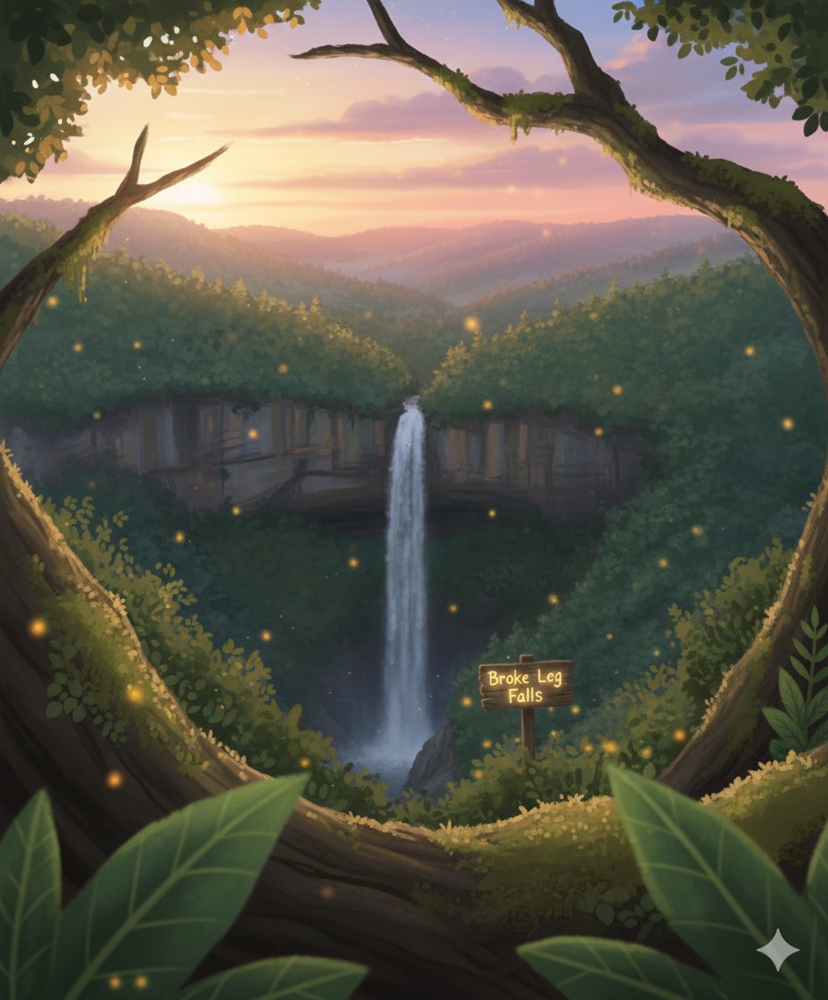
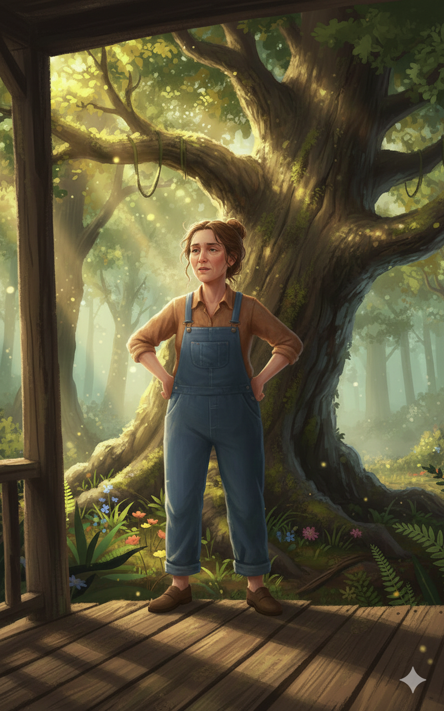
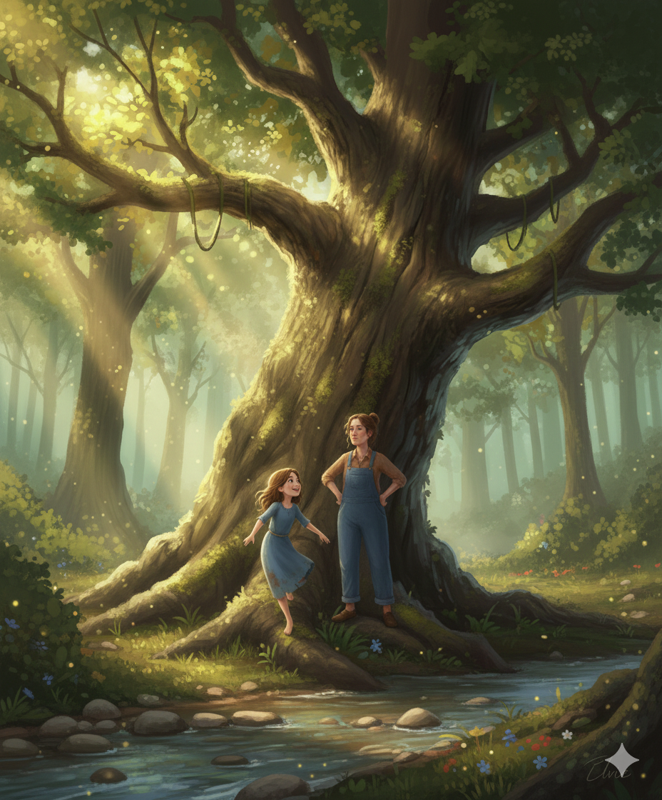

Tree-Top Adventures

Elvie, a sharp-eyed 10-year-old with freckles and tangled brown hair, crouches at the edge of the creek. She eyes the towering old oak tree that’s been calling her name all morning.
Eliza Jane:
“Elvie. That tree ain’t your friend. Get down.”

High up, Elvie perches on a sturdy limb, swaying gently in the breeze. She gasps at the view of the Appalachian ridges stretching in golden greens.
Elvie:
“I can see all the way to Broke Leg Falls from here!”

Eliza Jane:
“Picture or no picture, dirt don’t care. Get down before it introduces itself.”
Eliza Jane leans against the porch railing, eyes on the girl, dry as ever. One of these days, she knows, gravity is going to lose its patience.

Elvie carefully climbs down, her shoes crunching against fallen leaves. Eliza Jane steps closer, her voice brisk but relieved.
Elvie:
“Worth it. Ain’t nothin’ like Twin Branch from up there.”